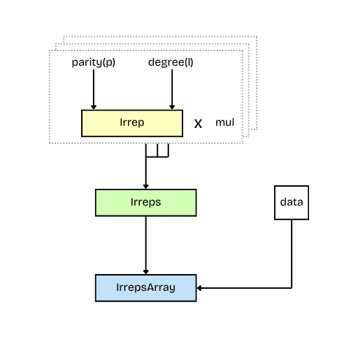

Irreducible Representations of O(3)
A group representation $(D, V)$ describes the action of a group $G$ on a vector space $V$. Formally, this is written as:
\[D: G \to \text{GL}(V)\]
where $\text{GL}(V)$ denotes the general linear group of $V$, i.e., the group of invertible linear transformations on $V$.
A representation of a group is a mapping(a literal matrix) from the group elements to the general linear group of matrices. The irreducible representations, or irreps, are the "minimal" non-trivial representations of a group. They are fundamental in the sense that any finite-dimensional representation of a group can be decomposed into a direct sum of irreps.
The orthogonal group $O(3)$ is the group of $3×3$ orthogonal matrices. Geometrically, $O(3)$ represents all rotations and reflections in three-dimensional space that preserve distances and angles. Any physical quantity, under the action of $O(3)$, transforms with a representation of $O(3)$
The special orthogonal group $SO(3)$ is a subgroup of $O(3)$. $SO(3)$ represents all rotations in three-dimensional space, excluding reflections. $O(3)$ can be therefore be decomposed as a direct product of $SO(3)$ and the inversion group ${e, I}$:
\[O(3) \cong SO(3) \times \{e, I\}\]
where $e$ is the identity element of the group(here $3 \times 3$ identity matrix) and $I$ represents inversion(reflection) ($-1 \times$ identity matrix).
So, any element $g \in O(3)$ can be uniquely written as $g = ri$, where $r \in SO(3)$ and $i \in {e, I}$.
The irreps of $O(3)$ are the product of the irreps of $SO(3)$ and inversion. The irreps of the $SO(3)$ group are called Wigner matrices $D^L$. The Inversion group has 2 irreps:
- The trivial representation $\sigma_+$, where inversion does nothing (multiplies by 1)
- The sign representation $\sigma_-$, where inversion flips the sign (multiplies by -1).
\[\sigma_p(g) = \left \{ \begin{array}{l} 1 \text{ if } g = e \\ p \text{ if } g = I \end{array} \right..\]
Therefore, the irreps of an element $g \in O(3)$, where $g = ri$ is given by, $\sigma_p(i)D^L(r)$. In our library, we represent it using Irrep.
And, Irreps represents the direct sum of irreps of $O(3)$:
\[g = r i \mapsto \bigoplus_{j=1}^n m_j \sigma_{p_j}(i) D^{L_j}(r)\]
where $n \in \mathbb{N}$, $m_j \in \mathbb{N}$, $p_j \in \{+1, -1\}$, and $L_j \in \mathbb{N}_0$ for $j = 1, \ldots, n$.

Irrep
The Irrep struct stores the degree $l$ and the parity $p$ of the representation $\sigma_p(i)D^l(r)$.
For a small recap:
- The variable $l$ represents the angular momentum quantum number or degree of the irrep.
- For $l$ = 0 , the representation is scalar, for $l$ = 1, the representation is a vector. For higher $l$, the representations are tensors of increasing rank, with dimension (2$l$ + 1).
- The parity $p$ indicates whether the irrep is invariant under reflection through the origin.
- A positive parity $( p = 1 )$ means the object behaves symmetrically under inversion, while negative parity $( p = -1 )$ implies antisymmetry, flipping sign upon inversion. Together, $l$ and $p$ fully characterize how a function or field transforms under both rotation and inversion.
julia> using E3NN.O3
julia> Irrep("1e")
1e
julia> Irrep(1, -1)
1o
Get the dimension of the representaion.
julia> dim(Irrep("1e"))
3Irreps
The Irreps struct represents a direct sum of irreducible representations. It is a collection of Irrep objects, each with an associated multiplicity. This is the primary way to describe the structure of feature vectors in an equivariant neural network.
Construction
You can create an Irreps object in several ways:From a string, which is the most common method:
julia> Irreps("3x0e + 2x1o")
3x0e+2x1oFrom a single Irrep, which will have a multiplicity of 1:
julia> Irreps(Irrep("2e"))
1x2eFrom a list (Vector or Tuple) of Irrep or MulIrrep objects:
julia> Irreps([Irrep("0e"), Irrep("1o")])
1x0e+1x1o
julia> Irreps([(2, Irrep("1e")), (3, Irrep("2o"))])
2x1e+3x2oAn empty Irreps represents the zero-dimensional vector space.
julia> Irreps()
julia> sprint(show, Irreps())
""Properties and OperationsYou can inspect the properties of an Irreps object with several utility functions.The total dimension of the vector space is given by dim:
julia> dim(Irreps("3x0e + 2x1o"))
9The total number of irreps (sum of multiplicities) is given by num*irreps:
julia> num_irreps(Irreps("3x0e + 2x1o"))
5The maximum l value is given by lmax:
julia> lmax(Irreps("3x0e + 2x1o"))
1You can perform a direct sum using the + operator. The result is automatically regrouped into a canonical form.
julia> Irreps("1x1o") + Irreps("2x0e") + Irreps("1x1o")
2x0e+2x1oYou can scale the multiplicities using the * operator.
julia> 3 * Irreps("1x0e + 2x1o")
3x0e+6x1oManipulation and Filtering
The library provides powerful functions to manipulate Irreps. regroup sorts the irreps and combines identical ones by summing their multiplicities. This is useful for creating a canonical representation.
julia> regroup(Irreps("2x1o + 1x0e + 3x1o"))
1x0e+5x1ofilter allows you to select a subset of the irreps based on various criteria.
julia> irreps = Irreps("3x0e + 2x1o + 4x2e")
3x0e+2x1o+4x2e
julia> filter(irreps, lmax=1)
3x0e+2x1o
julia> filter(irreps, keep=Irreps("0e + 2e"))
3x0e+4x2e
julia> filter(irreps, drop=mulir -> mulir.mul > 2)
2x1o